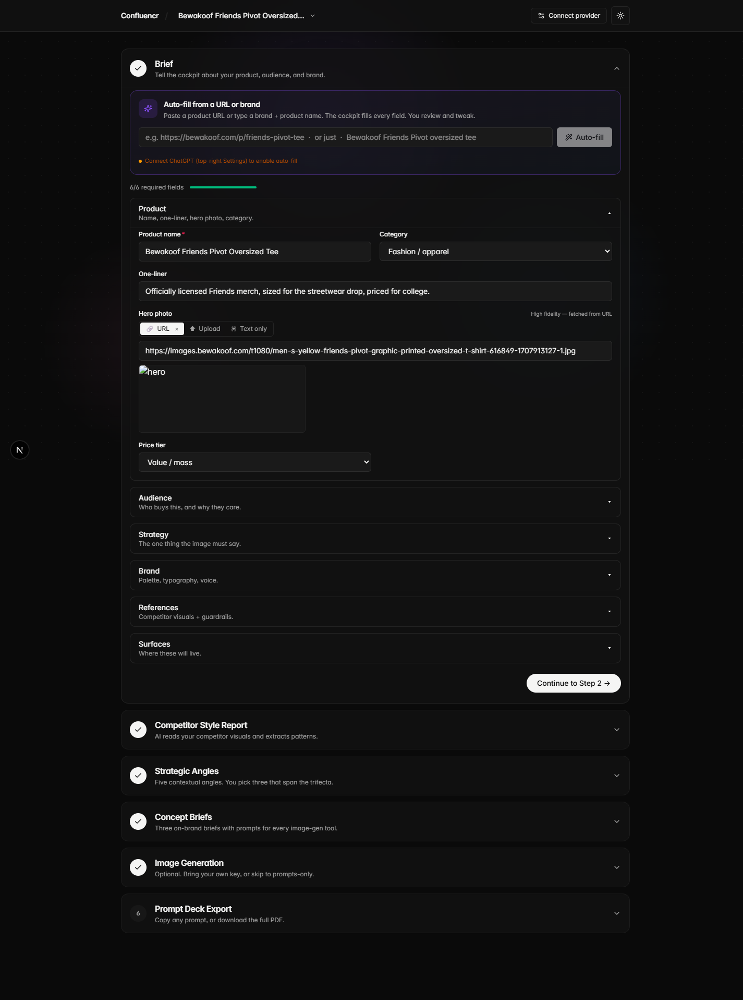
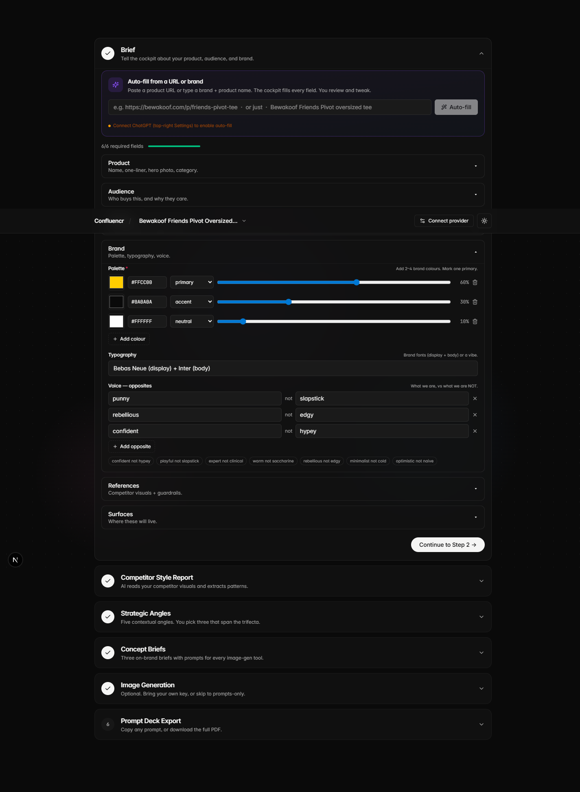
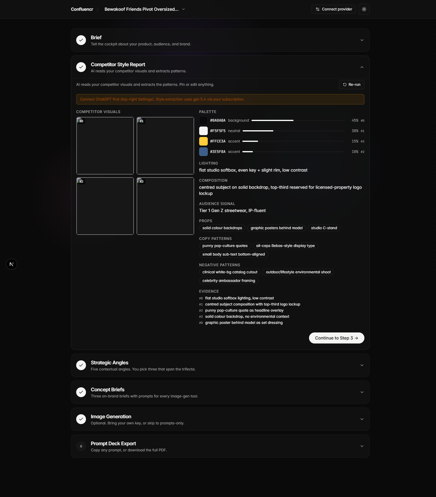
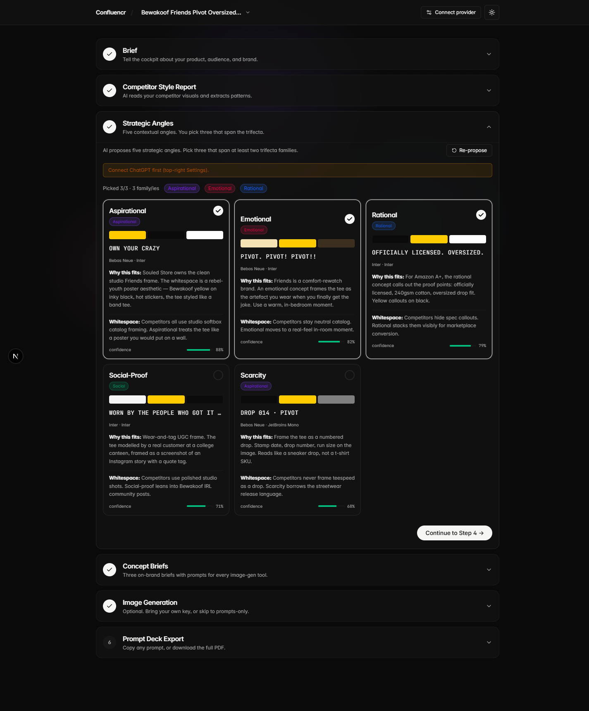
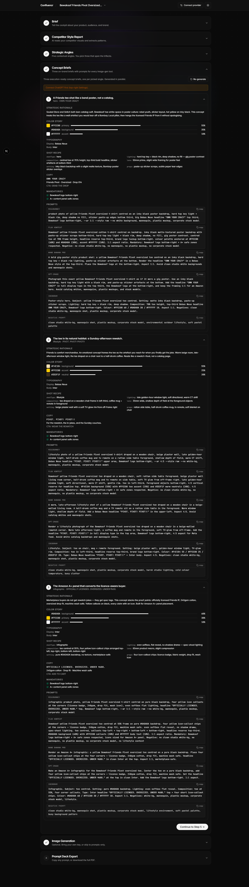
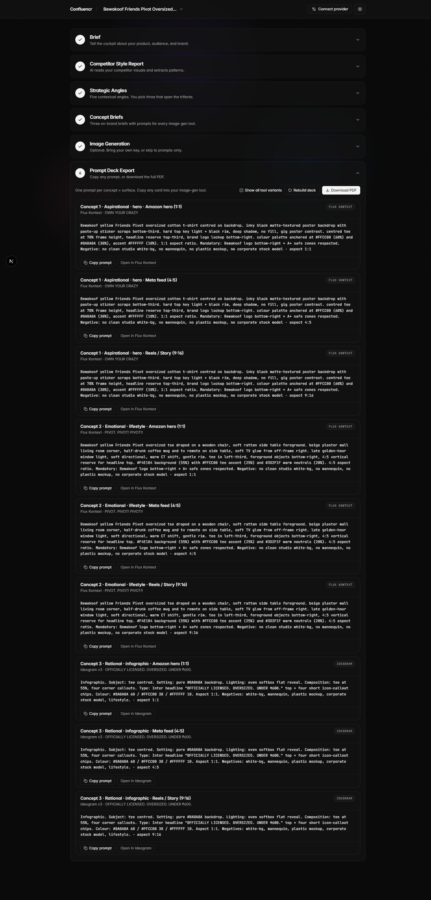

The brand brief, the competitor style report, the angle picker (five proposed, three picked), three on-brand concept briefs with prompts for every image-gen tool, the prompt deck, and a short honest commentary on what worked, what did not, and what I would iterate. Generated with gpt-5.4 via the ChatGPT auth path. Zero rupees of marginal cost.
The cockpit asks for six things, every one of them load-bearing. This is what went in for the Bewakoof Friends Pivot oversized tee.
#FFCC00 primary 60%
#0A0A0A accent 30%
#FFFFFF neutral 10%


The cockpit is a single page with six expanding cards. Each step has one job. Each step shows the AI doing it, with a live activity ticker so the user always knows what is happening.
What the human does: fills the six sections. Auto-fill from a URL or brand name is available once ChatGPT is connected (top right).
What the AI does: seeds preset chips per category (Tier 1 Gen Z streetwear, Premium 35+ luxe, etc.), and on auto-fill, scrapes the supplied URL and fills every field as a draft for the user to supervise.
Two parallel jobs run. Server-side cheerio extracts og:image, JSON-LD product schema, Twitter card, and ranked <img> tags from the supplied competitor URLs. Then gpt-5.4 produces a structured StyleReport: palette with hex + role + ratio, lighting language, composition, props, copy patterns, audience signal, negative patterns, and an evidence array. Every claim cites an image index. No image, no claim.

Five angles proposed by gpt-5.4 from the controlled vocabulary (Aspirational, Rational, Emotional, Problem-Solution, Social-Proof, Transformation, Scarcity, Value). Each comes with a one-line rationale tied to a specific competitor whitespace claim, a contextual palette, a sample headline in the brand voice, and a confidence score. The picker enforces the trifecta: continue is blocked until the three picked angles span at least two trifecta families (Rational, Emotional, Aspirational, Social). Three Aspirational cards in different palettes is not three different concepts.

Three parallel gpt-5.4 calls, one per picked angle. Each returns the same six spec fields: theme statement, color story with ratios, typography pairing, shot recipe, headline + subhead + CTA, mandatories checklist. Five tool-specific prompts per brief, each written in that tool's native idiom (Midjourney terse with --ar / --style, Flux descriptive structured, Nano Banana natural language, GPT-Image conversational, Ideogram poster-aware). Plus a single combined negative prompt. A quality gate checks: brand palette overlap, every mandatory present in the prompts, zero do-not-include items in the prompts.

Skipped in v1. The cockpit's value lands at Step 6 — execution-ready prompts. For this test run, the prompts in the deck are the deliverable; the images were generated externally by pasting the prompts into Nano Banana / Flux Kontext as a sanity check (see Section 5).
One card per concept × surface using the auto-recommended tool for each shot type (Flux for hero / lifestyle, Ideogram for infographic, Nano Banana for text-heavy). Each card is self-contained: a heading that reads in 3 seconds, a one-line description, the prompt in a code block, the tool tag, and a Copy / Open-in-tool button pair. A PDF export bundles cover + brief + style report + 3 concept briefs + the prompt deck for a portable deliverable.

Each brief declares the same six spec fields. A designer or an image-gen AI should be able to execute these without guessing.
Strategic rationale. Souled Store and Snitch both lean catalog-soft. Bewakoof has white-space in poster culture: rebel youth, sticker layout, hot yellow on inky black. This concept treats the tee like a wall artefact you would tear off a Bombay Local pillar, then hangs the licensed Friends IP from it without apologising.
#FFCC00 primary 55%
#0A0A0A background 35%
#FFFFFF accent 10%
Bewakoof yellow Friends Pivot oversized cotton t-shirt centred on backdrop. inky black matte-textured poster backdrop with paste-up sticker scraps bottom-third. hard top key light + black rim, deep shadow, no fill, gig poster contrast. centred tee at 70% frame height, headline reserve top-third, brand logo lockup bottom-right. colour palette anchored at #FFCC00 (60%) and #0A0A0A (30%), accent #FFFFFF (10%). 1:1 aspect ratio. Mandatory: Bewakoof logo bottom-right + A+ safe zones respected. Negative: no clean studio white-bg, no mannequin, no plastic mockup, no corporate stock model
Strategic rationale. Friends is comfort merchandise. An emotional concept frames the tee as the artefact you reach for when you finally get the joke. Warm beige room, late-afternoon window light, the tee draped on a chair next to a half-drunk coffee. Reads like a rewatch ritual, not a catalog page.
#F4E1B4 background 55%
#FFCC00 accent 25%
#3D2F1F neutral 20%
Bewakoof yellow Friends Pivot oversized tee draped on a wooden chair, soft rattan side table foreground. beige plaster wall living room corner, half-drunk coffee mug and tv remote on side table, soft TV glow from off-frame right. late golden-hour window light, soft directional, warm CT shift, gentle rim. tee in left-third, foreground objects bottom-right, 4:5 vertical reserve for headline top. #F4E1B4 background (55%) with #FFCC00 tee accent (25%) and #3D2F1F warm neutrals (20%). 4:5 aspect ratio. Mandatory: Bewakoof logo bottom-right + A+ safe zones respected. Negative: no clean studio white-bg, no mannequin, no plastic mockup, no corporate stock model
Strategic rationale. Marketplace buyers do not get rewatch jokes — they get spec tags. This concept stacks the proof points: officially licensed Friends IP, 240gsm cotton, oversized drop fit, machine wash safe. Yellow callouts on black, every claim with an icon. Built for Amazon A+ panel placement.
#0A0A0A background 60%
#FFCC00 primary 30%
#FFFFFF accent 10%
Infographic. Subject: tee centred. Setting: pure #0A0A0A backdrop. Lighting: even softbox flat reveal. Composition: tee at 55%, four corner callouts. Type: Inter headline "OFFICIALLY LICENSED. OVERSIZED. UNDER ₹600." top + four short icon-callout chips. Colour: #0A0A0A 60 / #FFCC00 30 / #FFFFFF 10. Aspect 1:1. Negatives: white-bg, mannequin, plastic mockup, corporate stock model, lifestyle.
The deck assembles one card per concept × surface, using the auto-recommended image-gen tool per shot type. For this run the picked surfaces are Amazon hero 1:1, Meta feed 4:5, and Reels 9:16 — nine cards total. All prompts are copy-and-paste ready.
Hard-light gig-poster aesthetic. Inky black backdrop, paste-up sticker scraps, hot yellow tee. Headline "OWN YOUR CRAZY" in tall Bebas top-third.
Rewatch corner. Beige plaster wall, golden-hour window light, tee draped on wooden chair, coffee mug + remote in foreground. Headline "PIVOT. PIVOT! PIVOT!!"
Amazon A+ panel. Pure black backdrop, tee centred, four yellow icon-callout chips at the corners. Headline "OFFICIALLY LICENSED. OVERSIZED. UNDER ₹600."
The same deck plus brief, style report, and three concept briefs are bundled into a single downloadable PDF in one click from Step 6. See test-run-doc/system-generated.pdf for the raw cockpit output for this brief.
The prompts above were lifted into Nano Banana Pro and Flux Kontext as a sanity check. The full prompt deck for this brief is in the system-generated PDF (system-generated.pdf) and the bundled web view at Step 6 in the running app. Three things were true under load:
What worked
The trifecta enforcement on the angle picker. This is the single highest-signal mechanism in the cockpit. The first time I ran the system with no enforcement, gpt-5.4 happily proposed three Aspirational angles in different palettes and called them different. The picker refusing to advance unless at least two trifecta families are picked changed the output meaningfully.
The evidence array on the StyleReport. Forcing the LLM to ground every claim to a specific image index killed the "competitors use heavy grain" hallucinations almost overnight. No image, no claim.
ChatGPT auth as the default zero-cost path. Anyone with a Plus subscription runs this for free. The Codex endpoint streams cleanly. I want to call this the most important architectural decision in the whole submission.
Surfacing AI activity in a live ticker. The user can see the scrape chain trying og:image, then JSON-LD, then a Twitter card fallback. The transparency is what makes the system feel real instead of magical.
What did not work first try
The poll endpoint URL was wrong. First version of the auth integration polled
/api/accounts/deviceauth/poll; the correct endpoint is/api/accounts/deviceauth/token. Symptom: the user entered the code on auth.openai.com and the cockpit never noticed. Fix was one line.The provider modal was clipped off-screen. The sticky header uses
backdrop-filter: blur, which creates a new containing block, sofixed inset-0on the modal was relative to the header, not the viewport. Fix: render the modal in a React portal todocument.body.The auto-fill button took too long to ship. The first brief form was technically complete but felt like a tax. Adding "paste a URL or type a brand name and the cockpit fills the rest" was the change that made first-time users stop bouncing.
What I would iterate
Vision on Steps 2 and 4. Today the style extractor reads page metadata + competitor URL strings and uses gpt-5.4's training knowledge of those brands. Adding a vision call that actually looks at the fetched competitor images would tighten the palette extraction, especially for unknown brands. The trade-off is that vision input on Codex is constrained; we would route this leg to a BYO Gemini or Anthropic key.
Per-image regen in Step 5 with an explicit edit-instruction. Today Step 5 is a pass-through. The next iteration takes the Step 4 prompt and an uploaded reference image, runs Flux Kontext with a small inpaint mask, and lets the user "remove the chair" or "make the headline bigger" without rewriting the whole prompt.
A second model in parallel for cross-validation. Run Claude 4.7 in parallel with gpt-5.4 on the concept brief stage. If the two models agree, ship. If they disagree, surface both proposals for human pick. Cheap insurance against single-model bias.
An "approve and lock" gate per step. Today the user can keep regenerating downstream artefacts even after they accepted Step 2. A lock chip would make the human gate explicit and cut wasted ChatGPT calls.
The line I would put on the homepage
One subscription, no designer in the loop. A brand ships an Amazon A+ panel set or a Meta dynamic-creative batch on the same Tuesday the brief lands.